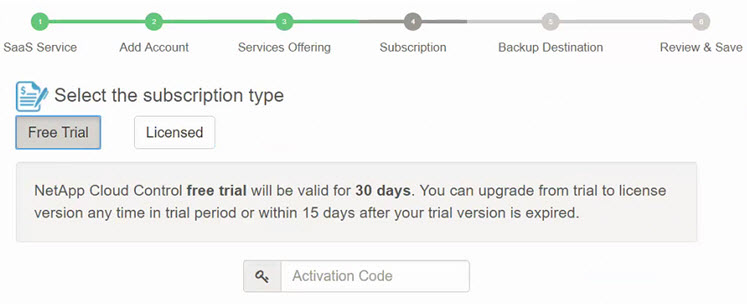

Office 365用NetApp SaaS Backupの新機能 GitHubで編集 ドキュメントの変更をリクエストする
貢献者
新機能とアップデート
このリリースのNetApp SaaS Backup for Office 365には、次の新機能と更新が追加されています。
2019年5月
SaaS Backupはアドオンライセンスをサポートするようになりました。
2019年4月
SaaS Backup for Office 365は、セキュリティグループの削除をサポートするようになりました。
共有メールボックスはユーザーライセンスを消費しなくなりました。
2019年3月
SaaS Backup for Office 365は、サポートされる各地域で複数のバックアップ場所をサポートするようになりました。
これで、選択した地域で利用可能な場所をデータバックアップのサイトとして選択できます。データの場所に地理的に最も近い場所を選択することをお勧めします。 SaaS Backupによって推奨されている場所は、オプションの一覧で優先としてマークされています。
注 ：試用版からアップグレードする場合、試用に使用した場所とは異なるバックアップの場所を選択した場合、証跡データは保存されません。
入門
試用版サブスクリプションからのアップグレードこれで、ユーザーライセンスを解放して他のユーザーが利用できるようにすることができます。
ライセンスを解除する
2019年2月
SaaS Backup for Office 365は、以下をサポートするようになりました。
アーカイブメールボックスのバックアップと復元。
Microsoft Office Exchange Online、SharePoint、およびOneDrive for Businessの間で強化されたバックアップおよび復元の統計情報。
2018年12月
SaaS Backup for Office 365は、AppDirect MarketplaceおよびCANCOM Marketplaceから購入できるようになりました。
2018年8月
ユーザーインターフェイスとユーザーエクスペリエンスの向上のために、ユーザーインターフェイスが再設計されました。
データ保持ポリシーが更新され、データを3年間保持できるようになりました。
バックアップポリシー
2018年5月
NetApp Cloud Controlは、Office 365用NetApp SaaS Backupに名前が変更されました。
SaaS Backup for Office 365からすべての関連データを完全に削除して、ユーザー、サイトコレクション、およびOffice 365グループを削除できるようになりました。
ユーザー、サイトコレクション、またはOffice 365グループを削除するSaaS Backupは、Office 365グループのパブリックグループとプライベートグループの両方を検出するようになりました。
2018年4月
SaaS Backup for Office 365は、Microsoft Office Exchange Onlineの共有メールボックスをサポートするようになりました。
共有メールボックスは、自動的に作成されたサービスアカウントを使用して検出されます。このアップデートの前にMicrosoft Office Exchange Onlineのサービスを有効にしていない場合は、Microsoft Office Exchange Onlineを有効にすると、SaaS Backupによって共有メールボックスの自動サービスアカウントが作成されます。 Microsoft Office Exchange Onlineのサービスが既にアクティブになっている場合は、共有メールボックスを検出してバックアップできるように、SaaS Backupに自動サービスアカウントを作成する権限を付与する必要があります。 共有メールボックスを有効にするためのアクセス許可の付与
自動サービスアカウントが作成されると、次にスケジュールされているユーザーアカウントの同期中に、共有メールボックスが自動的に検出されます。共有メールボックスをすぐに検出したい場合は、すぐにユーザーアカウントを同期できます 。
2018年3月
無料試用版のアクティベーションコードを入力する場所は、サービスプロバイダの追加ウィザードに移動されました。

2018年2月
テンプレートIDに基づくフィルタリングがMicrosoft SharePoint Onlineで利用可能になりました。
ユーザー定義フィルターの作成これで、SaaS Backup for Office 365のユーザーアカウントアクティビティログを.csvファイルにダウンロードできます。
活動記録ログのダウンロードSaaS Backup for Office 365とサービスの間のユーザーアカウント、サイト、およびグループの同期は、デフォルトで有効になっています。
バックアップバージョン履歴の包含はデフォルトで有効になりました。デフォルトのバージョン数は20です。
バックアップ設定の更新
2018年1月
アクティビティログに、SaaS Backup for Office 365の内部で実行された各アクションに関連付けられたユーザーIDの名前が表示されるようになりました。
SaaS Backup for Office 365内から、ユーザーのアクセス許可をAzure Active Directoryと手動で同期できるようになりました。
Microsoft Exchange Onlineは、フォルダレベルでの復元のためにPSTへのエクスポートをサポートするようになりました。
2017年11月
SaaS Backup for Office 365は、SaaS Backupが提供するストレージのオプションとしてAzure Blobをサポートするようになりました。
SaaS Backup for Office 365は、バックアップおよび復元用にMicrosoft Office 365グループをサポートするようになりました。
Microsoft Office 365グループをアクティブにする前に、Microsoft Exchange OnlineまたはMicrosoft SharePoint Onlineをアクティブにする必要があります。 Microsoft Office 365グループは、Tier 3バックアップポリシーでのみ保護できます。Microsoft Exchange Onlineは、メールボックスレベルでの復元のためにPSTへのエクスポートをサポートするようになりました。
2017年10月
事前定義された基準に基づいてユーザーを事前に選択されたバックアップ層に自動的に移動できるようにする規則を作成できます。
Microsoft Exchange OnlineとMicrosoft OneDrive for Businessのルールを作成できます。 Microsoft SharePoint Onlineのルールは作成できません。
ルールを作成する
既知の問題と制限
サイトコレクショングループの復元で部分的に失敗したジョブステータス
サイトコレクショングループ全体を削除すると、コレクション内のプライベートグループの復元が失敗し、復元ジョブのステータスが "部分的に失敗しました"になります。この場合、そのサイトにはGUIからアクセスできません。